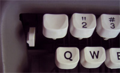
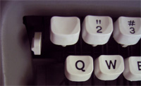

about

The Lettera 35l is a fully manual typewriter. It has no memory, so the keys are prone to jamming if you type too quickly. Otherwise, the machine is excellent. Having grown up primarily using a computer or word processor, i was slightly unprepared for some of its quirks.
My first exposure to the Lettera 35L was in Derek Birdsall's "Notes on Book Design." In the book, he describes one of the lettera's most enjoyable features: its numbers. The numbers are old-style text figures which dip below the baseline. In the lettera, the effect is subtle and not as exaggerated as in some fonts. Curiously, the one number that i did not locate was the 1. In true old fashioned style, the L doubles as a 1.
features
 

The lettera has a few, well implemented features. These include a settable tab stop, a two color ribbon, an automatic single, double and triple spacing option and a set of rabbit ear paper holders. All in all, it is very nicely designed.
Color
Changing the color that you type in is straightforward. The spool has two colors on it. The black is on the top and the other is on the bottom. You can switch between the colors by lifting the switch on the right side. After one or two tries the motions are purely subconscious. The mechanism works by lifting the ribbon so that the right part of it is impacted by the keys.
The only problem with this setup is that it does not take the standard Smith-Corona ribbons which are slightly too fat. The only fix that i can really see is to just suck it up or buy a proper ribbon from Nu-Kote. The proper item numbers are:
- B53 - Black Nylon
- BW277 - Black Nylon with White Correcting Tape
- NK277BR - Black/Red
The only thing to note is that you should be careful with are the original spools that came with your lettera, if any did come with it. The Smith-Corona ribbons are too small to fit in the typewriter, so you are forced to use the proper ribbon. Because the smith-corona ribbons are more readily available, you will probably find yourself, as i did, spooling the new ribbon onto the old spools.
Tab
By raising the left switch (the second image) and pushing the red tab button, you can set the tab stop at the current location on the line. To clear the tab, you hold the blank key where the 1 would normally be and push the tab button again. This button also allows you to continue typing once you've reached the hard right margin.
Even though its use is probably gratiuitous, i love being able to set a tab on my typewriter. It works nicely and feels re-assuringly mechanical.
Shift
Caps are implemented via a 'basket shift' which basically means that by pressing the shift key, you are moving the entire set of keys up so that the caps version of each key makes contact with the paper. This is sort of the same concept behind also typing in a different color. anyhow, In my case, using the shift for some letters proves to be somewhat sticky and works 'most of the time' but often i am left with THe or MArcos on the page.
Something i was completely oblivious to, having used word processors and computers most of my life (oh my), were the details about making things like exclamation marks or other bizzare punctuation. An exclamation mark is made up of a single quote and a period right over each other. Umlauts over letters are made by putting double quotes over whatever letter needs the umlauts.
quirks
When i first bought this typewriter, it was advertised as a Lettera 35i. I searched in vain to find anything about that particular model of typewriter only to find nothing at all. That is because on the label on the front of the typewriter the L is lowercase and is easily mistaked for a fancy looking I.